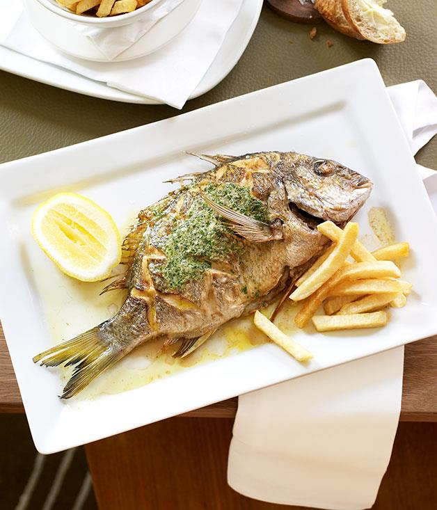

Home Button
Whole Sea Bream with Herb Butter
"The herb butter really seeps into the fish and gives this classic dish a little bit more complexity without dominating the natural flavours of the bream." - Neil Perry

Ingredients
- 4 whole sea bream, cleaned (450gm each)
- 100 ml extra-virgin olive oil, plus extra to serve
- To serve: lemon cheeks
METHOD
- For herb butter, blanch spinach, tarragon and chervil in boiling salted water for 5 seconds, drain and refresh in iced water. Squeeze out excess water thoroughly, then coarsely chop. Transfer to a blender and process with remaining ingredients, except butter and parsley, to form a paste. Add butter and pulse to combine. Pass through a coarse sieve, season to taste with sea salt and freshly ground black pepper and add parsley. Place on a sheet of greaseproof paper, roll into a log and refrigerate for 2 hours to firm. When firm, cut 4 discs of butter and bring to room temperature. Refrigerate remaining butter for another use.
- Preheat a chargrill over high heat. Drizzle fish with oil, season with sea salt and score both sides in a crisscross pattern. Cook for 4 minutes, turn and cook for another 3 minutes or until flesh gives under light finger pressure. Rest, covered with foil for 2 minutes, then serve with herb butter, a drizzle of oil, lemon cheeks and handcut chips.